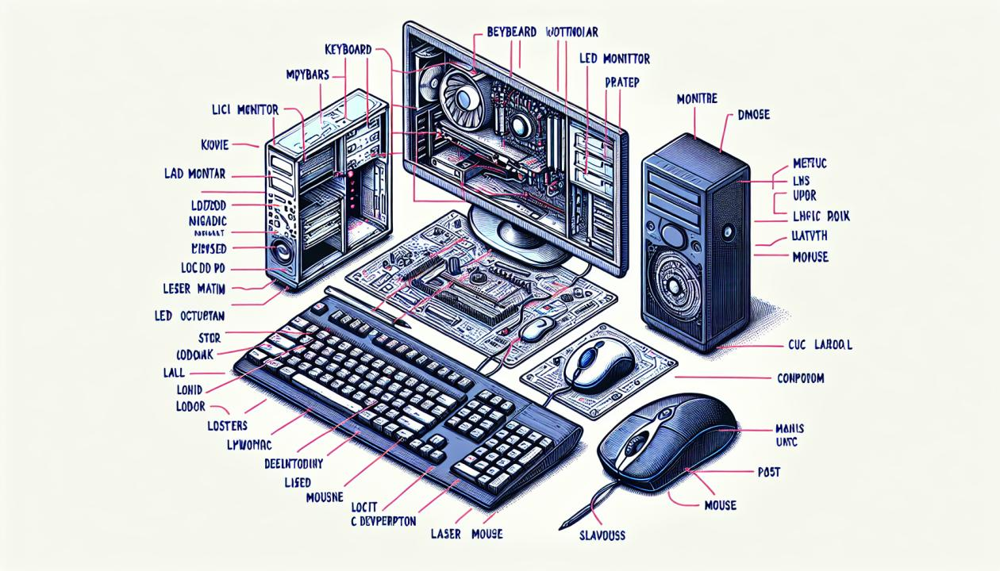

Персональный компьютер – это не один электронный аппарат (как, скажем, телевизор), а небольшой комплекс взаимосвязанных устройств, каждому из которых поручена определенная функция. Вероятно, вы уже слушали выражение «конфигурация ПК», которое обозначает, что конкретный компьютер может работать с разным набором внешних устройств, - например, с принтером, модемом, графопостроителем, сканером и т.д. Тем не менее, существует «минимальная» конфигурация, т.е. минимальный набор элементов, без которого работа ПК становится бессмысленной. Этот набор из трех элементов легко увидеть на любом столе, где находится персональный компьютер.
Сердце машины и ее мозг – системный блок, с которым соединены кабелями клавиатура и монитор. Системный блок и монитор независимо друг от друга подключаются к источнику питания – сети переменного тока (как правило, напряжением 220 В, но возможны и другие напряжения). В новых компьютерах дисплей и системный блок иногда монтируются в одном корпусе.
В системном блоке располагаются основные аппаратные компоненты ПК:
микропроцессор – «мозг» машины, который выполняет поступающие на его вход команды, а именно: проводит вычисления и дирижирует работой остальных элементов компьютера;
оперативная память, предназначенная для временного хранения программ и данных, а также для постоянного хранения встроенного блока операционной системы;
счетчик времени, который функционирует независимо от того, включена машина или нет.
Электронные схемы, которые управляют элементами компьютера и обменом данными между памятью и другими устройствами запоминания и отображения информации (диском, монитором, принтером);
Накопители на гибких и жестких магнитных дисках.
В современных ПК системный блок часто содержит дополнительные встроенные элементы: дисковод для компакт-дисков (CD-ROM), модем, звуковые карты, видеоплаты и др.
Эти носители, в отличие от оперативной памяти, предназначены для постоянного хранения информации.
В персональном компьютере применяются два вида магнитных дисков:
жесткий несъемный диск (винчестер);
сменные гибкие диски (дискеты).
Вся информация на дисках представлена в форме файлов – наборов байтов.
Жесткий диск предназначен для постоянного хранения той информации, которая более или менее часто используется в работе: программ операционной системы, компиляторов с языков программирования, сервисных (обслуживающих) программ, прикладных программ пользователя, текстовых документов, файлов базы данных и т.д.
Винчестер значительно превосходит гибкие диски по скорости доступа, емкости и надежности. Емкость жестких дисков измеряется в байтах и меняется в широких пределах: на старых IBM PC AT чаще всего мы видим винчестеры емкостью 20, 40, 80 Мбайт; на старших моделях – 40, 80, 120, 180, 210, 540, 1000 Мбайт и более.
Обычная емкость современных винчестеров – от 1 до 4 гигабайт. Как правило, ПК имеет один винчестер, однако бывают машины и с несколькими дисками.
Примечание. В последнее время появились машины со съемными жесткими дисками.
Каждый компьютер располагает одним или двумя дисководами для гибких магнитных дисков (дискет).
Дискеты используются для обмена программами и данными между компьютерами, для хранения архивной информации, не используемой в работе, для хранения запасных копий программ и данных (на случай их разрушения на винчестере). Разумеется, можно использовать дискеты и для обычной работы на компьютере, однако пользователи прибегают к этому в редких случаях, так как это резко замедляет исполнение программ.
Ранее наибольшее распространение имели дискеты диаметром 5,25 дюйма и емкостью 1,2 Мбайт. Сейчас обычно используются более надежные и долговечные дискеты диаметром 3,5 дюйма и емкостью 1,44 Мбайт. На некоторых ПК вы увидите один или два дисковода только для дискет 5,25 дюйма; на некоторых – и тот, и другой дисковод; на некоторых – один или два дисковода только для дискет 3,5 дюйма.
Дискеты 5,25 дюйма имеют специальную прорезь для защиты от записи: если эту прорезь заклеить полоской бумаги, запись на эту дискету будет блокирована. На дискетах 3,5 дюйма для защиты от записи вместо прорези предусмотрен специальный переключатель-«заслонка». Когда эта заслонка открыта, запись запрещена. Рекомендуется защищать от записи дискеты, на которых хранятся важные программы и данные, чтобы уменьшить риск случайного разрушения файлов. Для того, чтобы компьютер мог работать с дискетой, ее предварительно надо разметить (форматировать).
Для обращения к сменным магнитным дискам используются латинские обозначения А: и В:; первый жесткий магнитный диск обозначается именем С:.
В современных ПК в качестве устройства ввода широко используются дисководы CD-ROM, которые работают с компакт-дисками. В частности, на компакт-дисках, как правило, поставляются программные продукты, базы данных, мультимедийные приложения.
Монитор (дисплей) предназначен для вывода на экран текстовой и графической информации. Монитор работает под управлением специального аппаратного устройства – видеоадаптера, который предусматривает два возможных режима – текстовой и графический.
В текстовом режиме экран разбивается на 25 строк по 80 позиций в каждой строке (всего 2000 позиций). В каждую позицию (знакоместо) может быть выведен любой из символов кодовой таблицы – прописная или строчная буква латинского или русского алфавита, служебный знак («плюс», «минус», «точка» и т.д.), символ псевдографики, а также графический образ почти каждого управляющего символа.
В графическом режиме изображение формируется так же, как и на экране телевизора, - мозаикой, совокупностью точек, каждая из которых окрашена в тот или иной цвет.
В настоящее время наиболее распространены цветные мониторы с видеоадаптерами EGA (Enhanced Graphic Adapter – улучшенный графический адаптер), VGA (Video Graphic Array – видеографическая матрица) и SVGA (SuperVGA). Адаптер EGA сохранился на старых машинах, но в современных компьютерах уже не используется.
В текстовом режиме каждой позиции на экране этих мониторов соответствует один из 16 цветов фона и один из 16 цветов символа, выведенного в данную позицию.
Основные характеристики изображения в графическом режиме – разрешающая способность видеоадаптера, т.е. количество точек, выводимых по горизонтали и вертикали, и число возможных цветов каждой точки. Разрешающая способность конкретного адаптера зависит от режима его работы. В типичных случаях EGA выводит на экран 640 точек по горизонтали и 350 строк, VGA – 640 точек и 480 строк, SVGA – 640x480, 800х600, 1024х768. Число возможных цветов каждой точки («палитра») зависит и от типа адаптера, и от его разрешения, и от объема видеопамяти, отводимой компьютером адаптеру.
Минимальный элемент изображения на экране (точка) называется пикселем – от английского «picture element».
В зависимости от разрешения, пиксель может быть прямоугольным (например, в EGA) или квадратным (например, в VGA). Необходимо подчеркнуть, что изображения символов в текстовом режиме формируется теми же пикселями, которые образуют и графическую картинку. Разница в том, что в текстовом режиме программно-аппаратными средствами для каждого символа создается «матрица» из пикселей, и эта матрица как целое «печатается» на экране. Поэтому скорость вывода изображения в текстовом режиме гораздо выше, чем в графическом. Например, адаптер EGA для изображения каждого символа использует матрицу точек размером 8х14 (8 столбцов и 14 строк).
С параметрами видеоадаптера не следует путать физические характеристики монитора – размер зерна люминофора (например, 0,39 мм, 0,31 мм, 0,28 мм) и размер экрана по диагонали (например, 14, 15, 17, 20 дюймов, 1 дюйм = 2,54 см).
Четкость изображения на экране определяется и физическими данными монитора, и разрешающей способностью видеоадаптера, и просто качеством исполнения аппаратурных элементов видеосистемы (например, качеством люминофора). Не следует смешивать понятия «зерно» и «пиксель». Размер зерна изменить нельзя, а размер пикселя зависит от режима видеоадаптера. Для адаптеров с высоким разрешением нет смысла использовать монитор с крупным зерном.
В общем случае принято считать, что в текстовом режиме мониторы не очень отличаются друг от друга по четкости картинки, однако в графическом режиме с ростом разрешения растет и качество изображения.
При работе со старыми мониторами рекомендуется использовать специальные фильтры, которые защищают вас от излучения экрана. В современных мониторах вредное излучение практически подавляется.
С помощью клавиатуры мы вводим алфавитно-цифровые данные и управляем работой компьютера
В современной технологии вместе с клавиатурой используется и другое устройство ввода информации – манипулятор типа «мышь».
Принтер (печатающее устройство) предназначен для вывода информации на бумагу. Область применения принтеров весьма широка – от вывода обычной текстовой информации (текстовых документов) до построения сложных графических изображений (иногда – в цвете). Наибольшее распространение в работе с ПК получили принтеры трех типов: матричные, струйные и лазерные.
Это самые дешевые аппараты, обеспечивающие удовлетворительное качество печати для широкого круга рутинных операций, (главным образом, для подготовки текстовых документов). Одновременно матричный принтер – самое ненадежное устройство компьютера: в нем много механических деталей, которые при интенсивной эксплуатации быстро ломаются. Поэтому не рекомендуется использовать матричные принтеры для непрерывной печати большого объема текстовых документов (например, при расчете зарплаты в больших организациях), при печати сложных графических изображений. Многие матричные принтеры обеспечивают возможность цветной печати, однако режим работы механических частей при этом настолько напряженный, что вы рискуете быстро вывести принтер из строя.
Высокое качество печати ныне обеспечивают струйные принтеры, которые особенно удобны для вывода цветных изображений. Однако струйные принтеры требуют более тщательного ухода за собой.
Лазерные принтеры стоят дороже матричных и струйных, однако обладают и рядом преимуществ по сравнению с ними. Во-первых, лазерный принтер дает наилучшее (близкое к типографскому) качество печати. Во-вторых, скорость печати у лазерных принтеров в 4-5 раз выше, чем у матричных и струйных. В-третьих, эти принтеры весьма надежны и могут без опасений использоваться для непрерывного вывода больших объемов информации. Оригинал-макеты изданий, подготовленных на лазерном принтере, могут непосредственно передаваться в типографию для тиражирования.
За последние годы, с одной стороны, стоимость лазерных принтеров снизилась, и теперь их все чаще можно встретить у «рядовых» пользователей. С другой стороны, струйные принтеры по качеству печати и другим возможностям неуклонно сближаются с лазерными.
Когда вы включаете компьютер, одновременно с аппаратными компонентами начинает работать специальная программа, которая называется операционной системой (ОС) компьютера.
Эта система организует диалог пользователя с компьютеров, управляет распределением и использованием ресурсов машины (оперативной и дисковой памяти), дирижирует работой всех аппаратных элементов компьютера (клавиатуры, монитора, дисков, принтеров).
С точки зрения пользователя, ОС – продолжение аппаратных средств компьютера.
Своеобразным эталоном для машин разных классов считается UNIX – многопользовательская, многозадачная ОС, разработанная в конце 60-х годов компанией Bell Laboratories. Принципы организации файлов системы в UNIX (иерархическая структура каталогов) использованы и в других ОС, в том числе, в MS-DOS. UNIX – основная операционная система в Internet.
На ПК IBM PC по разным причинам наибольшее распространение получила система MS-DOS (Disk Operating System фирмы Microsoft), для которой и было разработано большинство прикладных программ.
Операционная система MS-DOS содержит следующие основные элементы:
Существует несколько версий MS-DOS: 3.3, 4.0, 5.0, 6.2, 6.22. Хотя версии ниже 5.0 считаются устаревшими, они все еще используются на многих ПК.
С начала 90-х годов на ПК преобладают графические оболочки и операционные системы. В 1992-1995 гг. большинство ПК работало в среде MS-DOS под управлением операционной оболочки Windows 3.1, а ныне основной стала операционная система Windows 95.
Параллельно с Windows 95 фирма Microsoft выпускает операционную систему Windows NT, предназначенную для работы в локальных сетях и на мощных рабочих станциях. Интерфейс клиентской части этой ОС - Windows NT Workstation – практически не отличается от интерфейса Windows 95.
Фирма IBM выпускает для ПК графическую операционную систему ОС/2, которая лишь частично совместима со средой Windows.